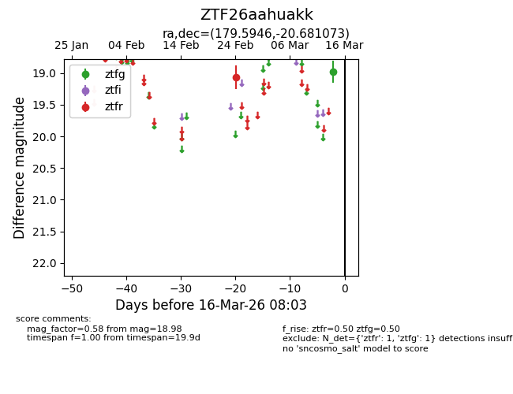
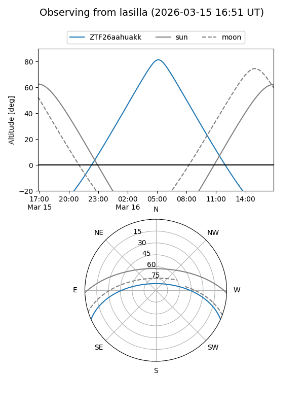
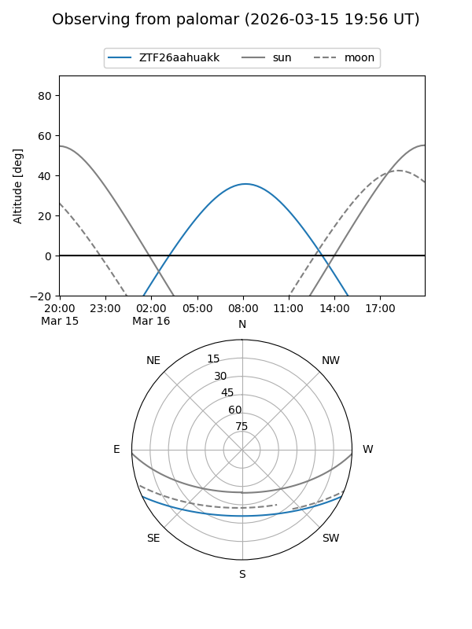

ZTF26aahuakk
Target ZTF26aahuakk at 2026-03-16 08:07
Aliases and brokers:
FINK: link
Lasair: link
ALeRCE: link
alt names
ZTF26aahuakk (ztf,fink_ztf)
Coordinates:
equatorial (ra, dec) = 179.5946,-20.68107
equatorial (HMS+DMS) = 11:58:22.70,-20:40:51.86
galactic (l, b) = (286.5352,+40.49525)
Flags:
Photometry:
last ztfg=18.98, ztfr=19.06
1 ztfg, 1 ztfr detections
Lightcurve

Visibility


Additional plots